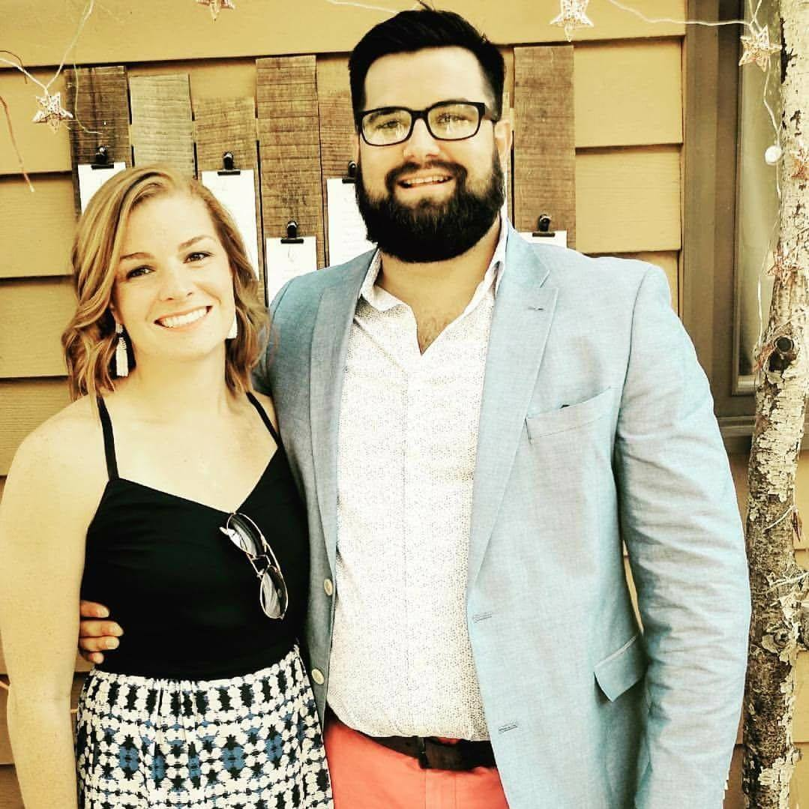

About Me
My name is Parker Browning and I moved down to Charlotte, NC with my wife, Claire, and dog, Kelly. We moved from Cincinnati, OH. where we were both born and raised. We decided on Charlotte due to the proximity to the beaches and mountains, which we both love, and for the better winters. (Yay! No more snow! (Kinda))
I graduated from Wittenberg University in Springfield, OH. in 2012. I have my BA degree in Business Management with a concentrate in finance. While there, I was a four year varsity swimmer and elected team captain my senior year. After college, I began a job with a freight brokerage and hated it everyday. This led me into my career in restaurants and hospitality. While I was a bar manager for a restaurant, I was approached about working on the other side of the business as a beer distributor rep. I loved working with beer and held the job for almost two years, until we made the decision to leave Cincinnati for Charlotte.
When we arrived in Charlotte, with no jobs, we hit the pavements and job recruiting sites hard. Claire, a former high school math teacher, found a job doing sales in a gym while tutoring local high school students. I found myself back in the restaurant world as a server at a local restaurant. I was able to find a job back in beer working as a rep for a local brewery on their sales team. While I grew my sales territory by 400%, I was unsatisfied with the industry and knew I needed to make a change. That's when I heard about the coding bootcamp! I'm excited to dive into the world of coding and explore all that it has to offer.